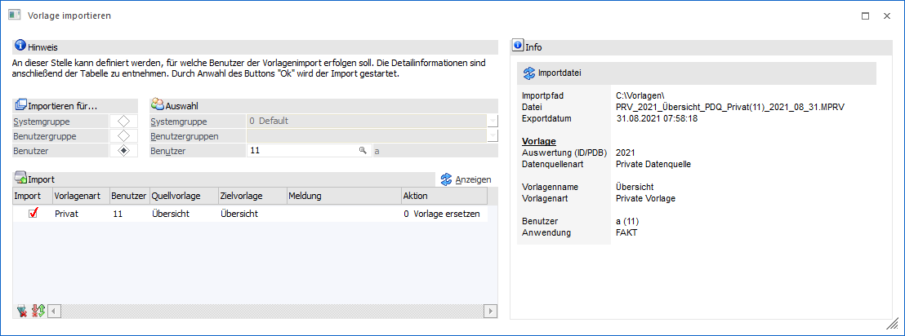
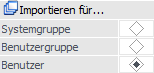
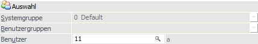
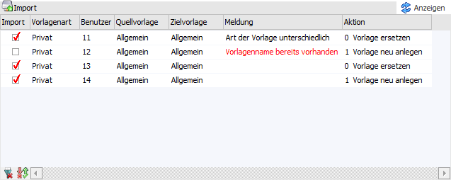
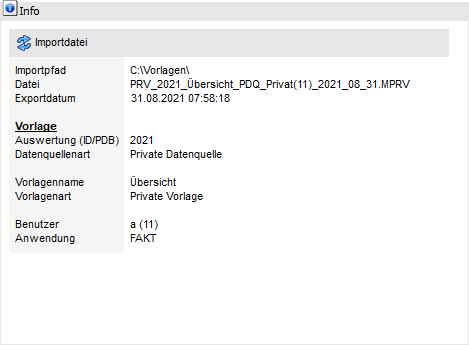

Mit Hilfe des Buttons "Vorlage importieren" kann eine Vorlage importiert werden. Nach einer Dateiauswahl per Windowsdialog (*.MPRV-Datei) steht hierfür das Fenster "Vorlage importieren" zur Verfügung.
Hinweis
Ob es sich bei dem Import um eine Neuanlage oder ein Update handeln soll, kann in der Tabelle "Import" definiert werden.

Folgende Einstellungen stehen zur Verfügung:
Importieren für…

Ø Systemgruppe / Benutzergruppe / Benutzer
Handelt es sich bei der Importvorlage um eine Vorlage der Art "Privat", so kann an dieser Stelle angegeben werden, für welches Ziel die Vorlage importiert werden soll. Detaileinstellungen können anschließend in der Tabelle "Import" vorgenommen werden. Importvorlagen der Art "Öffentlich" können hingegen immer nur für einen Benutzer importiert werden.
ü Systemgruppe
Die Vorlage wird
für alle Benutzer der Systemgruppe importiert.
ü Benutzergruppe
Die Vorlage wird
für alle Benutzer der gewählten Benutzergruppe(n) importiert.
ü Benutzer
Die Vorlage wird für
einen bestimmten Benutzer importiert.
Hinweis
Bei einem Wechsel der Auswahl wird die Tabelle "Import" nicht automatisch neu gefüllt. Dieses muss durch Anwahl des Buttons "Anzeigen" ausgelöst werden.
Des Weiteren stehen nur Volladministratoren oder Benutzern mit dem Teiladministrationsrecht "Datenadministration" alle Zielauswahlen zur Verfügung. Normale Benutzer können Vorlagen nur für sich selber importieren.
Auswahl

Ø Systemgruppe / Benutzergruppen / Benutzer
Abhängig von der Auswahl "Importieren für…" wird an dieser Stelle das Ziel angegeben.
Tabelle "Import"

Nach Anwahl des Buttons "Anzeigen" werden in die Tabelle alle Benutzer (gemäß Selektion) eingetragen. Hierbei finden automatisch diverse Prüfungen statt, welche den Inhalt der Spalten "Import", "Meldung" und "Aktion" beeinflussen.
Ø Import
Mit Hilfe der Checkbox in der Spalte "Import" kann definiert werden, für welche Benutzer die Vorlage importiert werden soll.
Hinweis
Wenn in der Spalte "Meldung" ein Fehler angezeigt wird (rote Schrift), so ist eine Aktivierung der Checkbox nicht möglich.
Ø Id
Handelt es sich um eine Vorlage aus den Bereichen "Enterprise Cube" oder "List", so muss hier der WinLine Cube bzw. die WinLine LIST-Liste für den Import angegeben werden.
Hinweis
Es erfolgt während des Imports keine Prüfung, ob die Datenfelder der Vorlagen mit jenen des Cubes / der Liste zusammenpassen. D.h. sollte die Vorlage anschließend nicht wie gewünscht funktioniert, so kann dieses die Ursache sein!
Ø Vorlagenart
In dieser Spalte wird die ursprüngliche Art der Importvorlage angezeigt.
Ø Benutzer
An dieser Stelle wird die Benutzernummern des Zielbenutzers angezeigt.
Ø Benutzername [optional]
Hier wird der Loginname des Benutzers angezeigt, für welchen die Vorlage importiert werden soll.
Ø Quellvorlage
In dieser Spalte wird der Namen der Importvorlage angezeigt.
Ø Zielvorlage
An dieser Stelle wird der Name der Zielvorlage angezeigt. Handelt es sich um eine Neuanlage, so kann der Name editiert werden.
Ø Meldung
In dieser Spalte werden Hinweise (schwarze Schrift) und Fehler (rote Schrift) ausgegeben.
ü kein Cube ausgewählt / keine Liste
ausgewählt (Fehler)
Es soll eine Vorlage aus den Bereichen "Enterprise Cube"
oder "List" importiert werden, aber es wurde das Ziel in der Spalte "Id" bisher
nicht definiert.
ü Vorlagenname existiert bereits
(Fehler)
Es soll eine Neuanlage stattfinden, aber der gewünschte Vorlagenname
existiert werden. In diesem Fall muss der Name in der Spalte "Zielvorlage"
angepasst werden.
ü Art der Vorlage unterschiedlich
(Hinweis)
Es soll ein Update einer bestehenden Vorlage durchgeführt werden,
wobei sich die Art der Vorlagen (z.B. Importvorlage "Privat", bestehende
Vorlagen bereits "Öffentlich") unterscheidet. In solch einem Fall wird die
Vorlagenart der existierenden Vorlage nicht geändert.
Beispiel
Die Vorlage "Kontenübersicht" wurde als "private" Vorlage importiert. Anschließend wird die Vorlage in der Installation veröffentlicht. Findet nun nochmals ein Import der Vorlage statt (als Update), dann bleibt die "neue" Vorlagenart "Öffentlich" erhalten, der Inhalt der Vorlage ändert sich aber entsprechend.
ü Vorlagenname unterschiedlich
(Hinweis)
Es soll ein Update einer bestehenden Vorlage durchgeführt werden,
wobei sich der Name der Vorlagen (z.B. Importvorlage "Debitorenansicht",
bestehende Vorlagen "Kundenansicht") unterscheidet. In solch einem Fall wird der
Vorlagenname der existierenden Vorlage nicht geändert.
Beispiel
Die Vorlage "Debitorenansicht" wurde importiert. Anschließend wird der Vorlagename in der Installation auf "Kundenansicht" geändert. Findet nun nochmals ein Import der Vorlage statt (als Update), dann bleibt der "neue" Vorlagenname "Kundenansicht" erhalten, der Inhalt der Vorlage ändert sich aber entsprechend.
Ø Aktion
Mit Hilfe einer Auswahlliste kann definiert werden "wie" der Import erfolgen soll, wobei dieses davon abhängig ist, ob es die Vorlage bereits gibt.
ü Vorlage gibt es bereits
Mit
Hilfe der Auswahlen "0 - Vorlage ersetzen" (Standard) und "1 - Vorlage neu
anlagen" kann definiert werden, ob ein Update oder eine Neuanlage stattfinden
soll.
Hinweis
Wird sich in solch einem Fall für eine Neuanlage entschieden, so wird zwischen Import- und Zielvorlage keine logische Verbindung aufgebaut. D.h. mit der Importdatei ist kein Update der "neuen" Vorlage möglich.
ü Vorlage gibt es noch nichts
Es
wird nur die Auswahl "1 - Vorlage neu anlagen" angeboten, d.h. es ist nur eine
Neuanlage möglich.
Hinweis
In solch einem Fall wird zwischen Import- und Zielvorlage eine logische Verbindung aufgebaut. D.h. mit der Importdatei ist in der Folge ein Update der "neuen" Vorlage möglich.
Info

In dem Bereich "Info" werden diverse Information bezüglich der zu importierenden Vorlage ausgewiesen.
Buttons

Ø Ok
Durch Anwahl des Buttons "Ok" bzw. der Taste F5 wird die Vorlage für alle ausgewählen Benutzer importiert. Sollte der Button gesperrt sein, so sind in der Tabelle "Import" keine Benutzer ausgewählt worden.
Ø Ende
Bei Anwahl des Buttons "Ende" bzw. der Taste ESC wird das Fenster geschlossen.